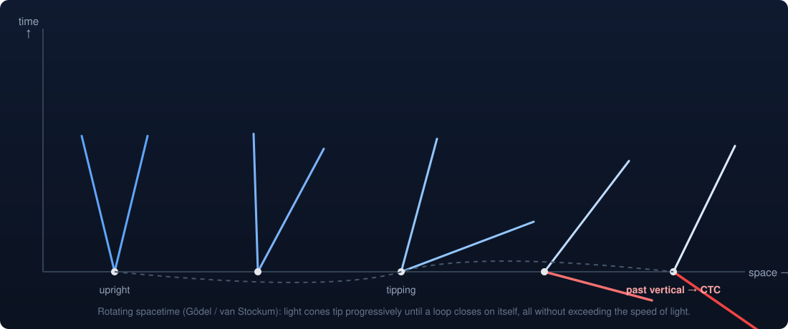
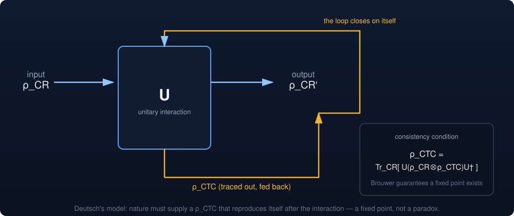
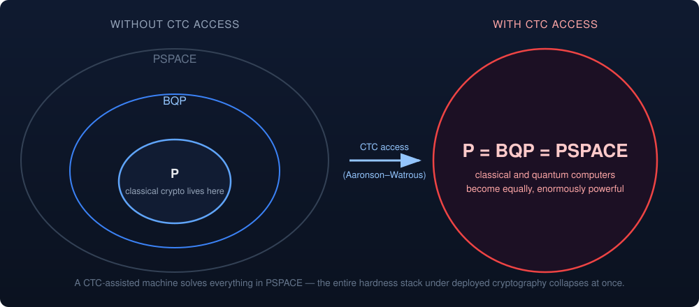

Savvy Security LLC
The Adversary With a Closed Timelike Curve
What theoretical physics actually says about time that folds back — and why it should interest anyone who thinks in threat models.
Here is a threat model nobody writes up: your adversary has access to the past. Not to logs of the past. To the past. They can send one qubit backward along a loop in spacetime and receive it as an input to the computation that produced it. Assume nothing else — no superior algorithms, no implementation bugs, no side channels, no insider. Just that one capability.
The security consequences are catastrophic and well-characterized in the peer-reviewed literature. That is the interesting part. This is not a fringe topic. It has theorems.
What follows is a survey of what mathematical physics has established about backward-in-time influence, organized around the question a security researcher would ask: what does it break, and what stops it?
1. General relativity does not forbid it
Start with the geometry, because that is where the strongest result sits.
Einstein's field equations admit exact solutions containing closed timelike curves — worldlines that return to their own past without ever exceeding the speed of light. Gödel found the first in 1949, a rotating universe. Others followed: van Stockum's rotating dust cylinder, Tipler's infinite rotating cylinder, the region inside a Kerr black hole's inner horizon, Morris–Thorne traversable wormholes, Alcubierre-type warp geometries.
The mechanism is usually one of two things. Either light cones progressively tip over due to rotation about a symmetry axis until the "future" direction curves back around, or the solution violates an energy condition — requires matter with properties no observed substance has.

That second clause is the load-bearing one. Every known CTC solution requires something we have never seen: infinite cylinders, negative energy density, rotation rates far exceeding anything cosmological observation supports. The equations permit these geometries. The universe has not been observed to supply the ingredients.
Stephen Hawking proposed the chronology protection conjecture in 1992 — that quantum effects diverge at the boundary of a would-be time machine and destroy it before it forms. Physics, he suggested, is safe for historians.
The conjecture remains unproven, and there is a structural reason it may be unprovable with current tools. Matt Visser's "reliability horizon" argument shows that the point where semiclassical quantum gravity stops being trustworthy always sits outside the chronology horizon. By the time you reach the region where you could check whether the time machine survives, the theory you are using to check has already failed. Visser's own reading: this is not a win for time travel enthusiasts, it is a demand for a full theory of quantum gravity. Counterexample constructions like the Roman ring make the same point from the other direction — no chronology protection theorem restricted to the reliable region can exist.
Nobody has closed this door. Nobody has proven it can be opened.
2. The grandfather paradox is a solved problem
This is where the field diverges hardest from popular intuition, and where it should start to feel familiar to anyone who has worked with constraint solvers.
The classic objection to time travel is logical, not physical: you go back, prevent your own departure, contradiction, therefore impossible. Joseph Polchinski posed the clean version to Kip Thorne — a billiard ball fired into a wormhole at an angle such that it emerges in the past and knocks its younger self off the path that sent it in.
Thorne's students Echeverria and Klinkhammer found the resolution in 1991. The ball emerges at a different angle, delivers a glancing blow rather than a full deflection, and that glancing blow adjusts the younger ball's trajectory into exactly the one that produces the glancing blow. The loop closes. No contradiction.
More importantly: they went looking for initial conditions admitting no self-consistent extension, and could not find any. Later analysis with Robert Forward showed some trajectories admit infinitely many consistent solutions. The problem was never too few histories. It was underdetermination — the loop does not overconstrain reality, it underconstrains it.
Quantum mechanically this becomes a theorem rather than a search. David Deutsch's 1991 model treats a CTC as a fixed-point condition on the density matrix of the looping system:
ρ_CTC = Tr_CR [ U ( ρ_CR ⊗ ρ_CTC ) U† ]
Nature must supply a ρ_CTC that reproduces itself after the interaction. Because the map is continuous over a compact convex set, Brouwer's fixed-point theorem guarantees at least one solution always exists. Deutsch noted it need not be unique.

Read that as a security property. Inconsistent histories are not forbidden by a rule that could be circumvented — they have no solution, and therefore zero amplitude. The grandfather paradox is not prevented. It is unsatisfiable. An attacker cannot construct one for the same reason they cannot construct an integer solution to xⁿ + yⁿ = zⁿ for n > 2.
Bennett and Schumacher's alternative model (P-CTCs) reaches consistency differently — by post-selection, discarding the inconsistent branches rather than solving for the fixed point. The two models are not equivalent and make different predictions. That disagreement is live.
3. What it breaks
Now the part that matters for this audience.
Classical cryptography: gone. Aaronson and Watrous (Proc. R. Soc. A 465, 2009) proved that a computer with access to Deutschian CTCs has exactly the power of PSPACE — every problem solvable with polynomial memory. NP sits inside PSPACE. Factoring, discrete log, lattice problems, hash preimages, the entire hardness stack under every deployed and proposed cryptosystem: all polynomial-time for this adversary.
Post-quantum migration does not help. The same paper's headline result is that CTCs make quantum and classical computing equivalent — both land on PSPACE. There is no quantum-resistant primitive to migrate toward, because the adversary's advantage is not quantum. A classical machine with a time loop is just as strong.

Quantum key distribution: gone. Brun, Harrington and Wilde (Phys. Rev. Lett. 102, 210402) showed that qubits on closed timelike curves let a party perfectly distinguish any set of quantum states — including non-orthogonal ones. Their stated consequence is that an adversary with CTC access breaks any prepare-and-measure QKD protocol. BB84's security rests on the impossibility of distinguishing non-orthogonal states without disturbance. That impossibility does not survive contact with a time loop. The same result implies violation of the Holevo bound.
No-cloning: gone. Follow-on work (Brun–Wilde–Winter; Ahn–Myers–Ralph–Mann) established that D-CTCs permit cloning of quantum states to arbitrary accuracy as the CTC system's dimension grows, and more generally allow implementation of essentially any continuous nonlinear map on states.
Notice what all of these share. The adversary's power comes from nonlinearity. CTC-assisted evolution is not a linear map on density matrices, and every quantum-information security proof in existence assumes linearity somewhere.
4. The counterargument, which is serious
Bennett, Leung, Smith and Smolin (Phys. Rev. Lett. 103, 170502) pushed back hard, and the objection is one this audience will appreciate because it is fundamentally about threat model definition.
Their argument: if you present the CTC-assisted computer with a labeled mixture of states to be discriminated — which is the natural adversarial formulation, the one that matches how you would actually specify a security game — the CTC provides no advantage at all. The apparent contradiction with the Brun–Harrington–Wilde result dissolves once you notice that because CTC evolution is nonlinear, the output on a mixture is not the convex combination of outputs on its pure components.
They named the error the "linearity trap." The stronger framing from their follow-up work: these results have not been shown to dramatically speed up computation when computation is defined in a natural, adversarial way.
This is a dispute about whether the security game was specified correctly. It has not been settled. Anyone citing "CTCs break QKD" without citing this rebuttal is quoting half a literature.
5. The zero-capacity covert channel
Set aside exotic geometry entirely. There is a second, quieter body of work arguing that backward-in-time influence is already present in ordinary quantum mechanics, in flat spacetime, with no wormhole required.
The two-state vector formalism (Watanabe 1955; Aharonov, Bergmann and Lebowitz 1964) holds that a forward-evolving quantum state underdetermines a system — you need a backward-evolving state as well for a complete specification. The Wheeler–Feynman and transactional approaches take seriously that Maxwell's equations admit advanced as well as retarded solutions, and that the Feynman propagator is an equally weighted sum of both. The most technically developed modern work is Wharton and Argaman's Reviews of Modern Physics colloquium (92, 021002), which shows Bell's theorem does not exclude models where mediating parameters depend on measurement settings in their future — models that describe events "all-at-once" rather than unfolding forward, and that dissolve the usual tension between quantum mechanics and relativity.
There is even an argument that this is forced. Price contended that any time-symmetric ontology must be retrocausal; Leifer and Pusey formalized it under a weaker assumption they call λ-mediation. Tim Maudlin argues the central proof is fatally flawed. Also unsettled.
Here is the part worth internalizing, and it is the deepest structural fact in the whole field:
Every one of these models hides the retrocausal influence in variables you cannot access.
They have to. Wood and Spekkens showed that any causal model reproducing quantum correlations while respecting no-signalling must violate faithfulness — the backward influence has to be fine-tuned so that it cancels exactly at the level of observable statistics. Shrapnel and Costa's no-go theorem tightened the screws further on classical-ontology retrocausal accounts.
Translate that into the native language of this audience. These models posit a channel from future to past that provably carries zero bits of capacity at the observable layer. The influence exists in the ontology. The bandwidth is identically zero, and it is zero by structural necessity rather than by engineering accident, because any nonzero capacity would immediately yield superluminal signalling and break relativity.
If you have ever assessed a covert channel and concluded the leak was real but the capacity was provably nil, you have already reasoned about this exact structure.
The philosophical objection has the same shape. The bilking argument: if C retrocausally causes earlier E, then having observed E, simply arrange that C never happens. Every serious retrocausal model survives bilking by putting the influence somewhere the experimenter cannot reach in to intervene. Unreachable is the entire load-bearing property.
6. What this does not say
Two disciplinary hygiene notes, because both errors are endemic.
The delayed-choice quantum eraser does not demonstrate retrocausality. This is the experiment everyone reaches for and it does not show what it is claimed to show. The total dataset — every detection, unsorted — contains no interference pattern. The pattern appears only within subsets selected by the idler measurement, and those subsets interfere constructively in one and destructively in another, cancelling exactly when recombined. The physics is post-selection and correlation, structurally no stranger than a Bell test. Nothing in the past changed. The sorting key changed. Sean Carroll's treatment and Tabish Qureshi's analysis are both accessible and both blunt about this.
And the crucial one: consistency is not revision. In every mathematically rigorous framework surveyed here — Novikov self-consistency, Deutsch fixed points, all-at-once retrocausal models — the future never changes the past. There is one history. It is globally consistent. It is solved as a whole rather than computed forward from initial conditions.
The past was always going to include the future's contribution. Nothing was overwritten, because there was never a prior version to overwrite.
Emily Adlam's work on laws-as-constraints (Found. Phys. 52, 28) gives this its cleanest formulation: laws that apply atemporally to an entire history at once, rather than as an update rule stepping a state forward. A global constraint satisfied by the whole, not a loop executed in order.
Which is, if you want the analogy, less like a program and more like a solver returning the single assignment that satisfies every clause simultaneously — including the clauses that reference variables the naive execution order would have called "later."
Primary sources
All available free on arXiv unless noted.
Geometry and causality
- Luminet, Closed Timelike Curves, Singularities and Causality: A Survey from Gödel to Chronological Protection — arXiv:2101.08592. Best single entry point.
- Lobo, Closed timelike curves and causality violation — arXiv:1008.1127.
- Hawking, Chronology Protection Conjecture, Phys. Rev. D 46, 603 (1992).
- Visser, A reliability horizon for semiclassical quantum gravity — arXiv:gr-qc/9702041; and Traversable wormholes: the Roman ring — arXiv:gr-qc/9702043.
Computation and security
- Aaronson & Watrous, Closed Timelike Curves Make Quantum and Classical Computing Equivalent — arXiv:0808.2669.
- Brun, Harrington & Wilde, Localized closed timelike curves can perfectly distinguish quantum states — arXiv:0811.1209.
- Bennett, Leung, Smith & Smolin, Can closed timelike curves or nonlinear quantum mechanics improve quantum state discrimination or help solve hard problems? — arXiv:0908.3023. Read this alongside the two above.
- Deutsch, Quantum mechanics near closed timelike lines, Phys. Rev. D 44, 3197 (1991).
- Bartkiewicz et al., Closed timelike curves and the second law of thermodynamics — arXiv:1711.08334. Clean comparison of D-CTC vs P-CTC.
Quantum foundations
- Wharton & Argaman, Colloquium: Bell's Theorem and Locally-Mediated Reformulations of Quantum Mechanics — arXiv:1906.04313. The serious modern treatment.
- Leifer & Pusey, Is a time symmetric interpretation of quantum theory possible without retrocausality? — arXiv:1607.07871; with Maudlin's rebuttal, arXiv:1707.08641.
- Adlam, Laws of Nature as Constraints — arXiv:2109.13836.
- Stanford Encyclopedia of Philosophy, Retrocausality in Quantum Mechanics. The best-organized bibliography on the topic anywhere.
A note on sourcing. Every citation above is to peer-reviewed work or to arXiv preprints by established researchers in the field. Where the literature disagrees — and on the security-relevant results it disagrees sharply — both sides are cited. Check the primary sources rather than this summary.